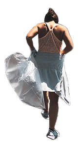

About Ocean Plastic Pollution
There are 8 million tons of marine litter is generated annually around tghe world.
Those litter may eventually exceed the amount of fish. A large amount of plastic waste flowing into the sea natually has a negative impact on the creature living in the sea.
海洋ごみについて
世界中で年間800万トンの海洋ごみが発生しており、いずれごみの量が魚を上回るかもしれないといわれています。この海に流出している大量のプラスチックごみは、当然海に暮らす生き物に悪影響を及ぼしています。
Mother Earth
Beach Clean

The beach clean-up activity "Mother Earth Beach Clean" started on my own in 2021. I was shocked to see a lot of drifted solid litter, dense chemicals on the beach when I visited the coast in Fukui Prefecture. It has grown to one group with friends cleaning-up the beach and also river and street in Kyoto. I share my activity on my Instagram and people knew my activity joined us. I hope that this small action will keep the ocean clean, and do whatever I could for Mother Earth.
2021年に福井県の海岸を訪れた際、海辺に大量のごみが漂着していることを目の当たりにしショックを受け、ビーチクリーン活動を始めました。
ビーチクリーン活動は友達や自身のインスタグラムで活動を知ってくれた人も参加してくれ、一つのグループまで大きくなりました。
福井の海岸だけでなく京都の川や街での清掃活動もしています。
この小さな行動が少しでも大好きな海を綺麗に保ち、これからも地球に優しい行動を続けていきたいと思います。